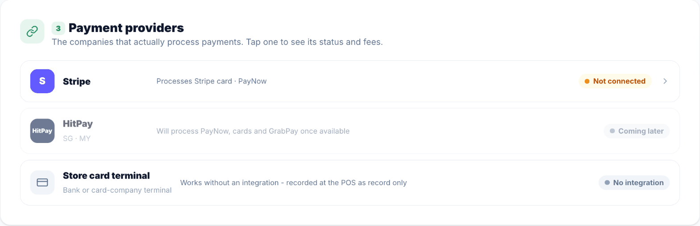
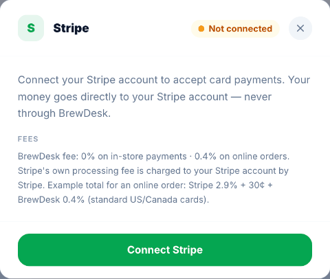
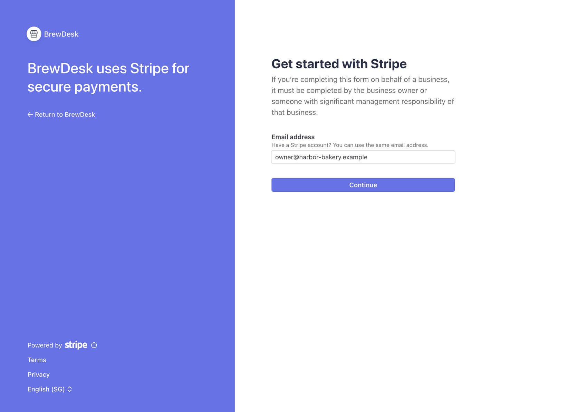
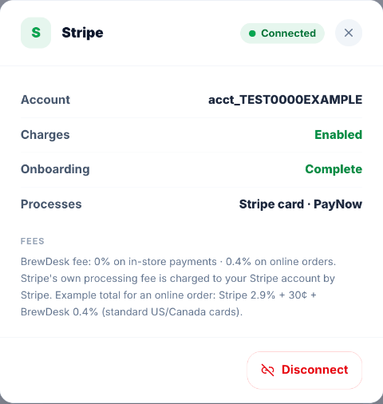

7刷卡收款准备 · 连接 Stripe
要收取刷卡、扫码和线上订单付款，需要把以门店名义开设的 Stripe 账户与 BrewDesk 连接一次。填写通常约 15 分钟；如需 Stripe 审核，约 1–2 个工作日。款项直接进入门店的 Stripe 账户，不经过 BrewDesk。
四步一览
① 准备资料 → ② 在 POS 打开 Settings › Payments，点最下方 Payment providers 里的 Stripe → ③ 点 Connect Stripe，由老板本人在 Stripe 页面填写 → ④ 回来确认显示 Connected
Stripe 账户属于老板本人。即使由经销商（总代理）帮忙安装，也请用老板本人的资料和门店账户开设。请用老板（Owner）账号在主 POS 上操作。手机上的老板 App 不能连接。
① 开始前准备（新加坡）
先确认门店国家和名称 — 连接后国家无法更改
在 Settings › Store Info 确认 Country（国家）、地址和 Store Name（门店名称）正确。首次连接时，Stripe 账户的国家按此值固定。
| 准备项 | 说明 |
|---|---|
| ☐ UEN | Stripe 用 UEN 调取 ACRA 记录核对。公司名称、地址、经营形式请与 ACRA BizFile 完全一致。 |
| ☐ 负责人本人 · Singpass | 由 ACRA 上登记为 Owner 或 Director 的人填写。用 Singpass 验证最快。无法使用 Singpass 时：NRIC、FIN 或护照（彩色原始照片）加自拍。居住在新加坡境外的负责人只能用护照。 |
| ☐ 收款银行账户 | 以公司（营业）名义开设的新加坡银行账户。 |
| ☐ 公司：股东和董事 | 持股 25% 以上的股东及董事。Stripe 会从 ACRA 预先填好，确认即可。 |
| ☐ 老板本人邮箱和手机 | 每天查看的邮箱（结算、补件通知会发到这里），以及接收验证码的手机。 |
| ☐ 门店介绍 · 账单显示名称 | 网站或社交媒体链接（没有则写门店介绍），以及顾客信用卡账单上显示的门店名称。 |
依据（Stripe 官方）：新加坡验证要求 · 私人公司 · 认可文件 · 2026-10 确认
如果不是负责人本人填写，Stripe 会要求 CEO 或 Director 签署的授权书（Letter of Authority，12 个月内）。老板本人操作最快。
②③ 连接

- 在主 POS 打开
Settings › Payments，点最下方 Payment providers 中的 Stripe 一行。

- 点 Connect Stripe，打开 Stripe 注册页面。

- 确认 Email address 是老板本人邮箱，点 Continue。输入手机和邮箱收到的验证码。
- 按 Stripe 的顺序填写 — UEN 和公司资料 → 负责人身份验证（Singpass）→ 公司需确认股东和董事 → 收款账户。
- 在最后一页提交后，会自动回到 BrewDesk 的 Payments 页面。
④ 确认已完成

- Stripe 一行显示 Connected（已连接）即完成。门店邮箱会收到一次 Stripe connected 邮件。此窗口中的 Charges 表示“可以收款”，不是手续费。
- 仍显示 Not connected：尚未完成，或 Stripe 正在审核。请看下方遇到问题时。
- 连接后，付款方式中的 Stripe card 和收款表中的 Needs connection（需要连接）会解锁。用自家刷卡机收款的 Counter terminal · record only（记录用刷卡）可以同时使用。
遇到问题时
| 情况 | 处理方法 |
|---|---|
| 中途关闭了窗口，或 Stripe 页面过期 | 再点 Payments › Stripe › Connect Stripe。Stripe 页面重新打开后，补填剩余内容。 |
| 已提交但仍显示 Not connected | Stripe 正在审核，通常几分钟，最长 1–2 个工作日。查看邮箱是否有 Stripe 邮件。如果没有，再点一次 Connect Stripe 看是否还有未填项。 |
| Stripe 要求补交资料 | 在 Stripe 后台 Settings › Business › Account status 查看所需资料，并只在该页面上传（不要用邮件发送）。 |
| 证件或文件被拒 | 常见原因：截图（不接受，请用原始照片或 PDF）、黑白照片、边缘被裁、缺背面、已过期、姓名与填写内容不一致。修正后重新上传。 |
| 提示公司名称或董事不一致 | 按 ACRA BizFile 完全一致地修改（包括拼写和空格）。董事或股东名单不同时，Stripe 会要求 12 个月内的证明文件。 |
| 要求授权书 | 上传由 Director 签署的 Letter of Authority，或由 ACRA 上登记的负责人本人操作。 |
| 银行账户无法验证 | 确认是公司名义账户，账号和银行正确。个人账户可能被拒。 |
支持的国家
| 类别 | 国家 | 说明 |
|---|---|---|
| Stripe + 刷卡器 | 新加坡 · 澳大利亚 · 新西兰 · 日本 · 马来西亚 · 美国 · 加拿大（魁北克省不销售 BrewDesk） | 按本章操作。 |
| 仅 Stripe（不支持刷卡器） | 泰国 · 阿联酋 | 只能收扫码和线上订单的卡付款。 |
| Stripe 预览（需联系 Stripe 销售） | 印度尼西亚 | 一般无法注册，按“不支持”处理。 |
| 不支持 | 越南 · 阿根廷 · 南非 | 不连接 Stripe。 |
截至 2026-10 · 可能随 Stripe 调整而变化。来源：stripe.com/global · docs.stripe.com/terminal/payments/regional
不支持国家的门店用自家刷卡机收款，并在 POS 上记为 Counter terminal · record only。
手续费由谁收取
- Stripe 手续费由 Stripe 直接从门店 Stripe 账户扣除。新加坡本地卡为 3.4% + S$0.50（海外卡另有费用）。准确费率请在 Stripe 后台查看。
- BrewDesk 手续费：店内收款 0%，仅线上订单 0.4%。
- 想把线上订单手续费体现在价格中，可使用 扫码点单 的 Online price increase。
连接之后
不要为了“试试”而断开连接
在 Stripe 窗口下方点 Disconnect 并确认后，Stripe 连接账户会被删除，Stripe 刷卡和扫码收款立即停止（现金和记录用刷卡不受影响），老板 App 会收到付款提醒。只有在国家设置错误需要重新连接时，且在非营业时间才这样做。